20 Büro-Übungen · ≤ 1 Minute · Körpergewicht
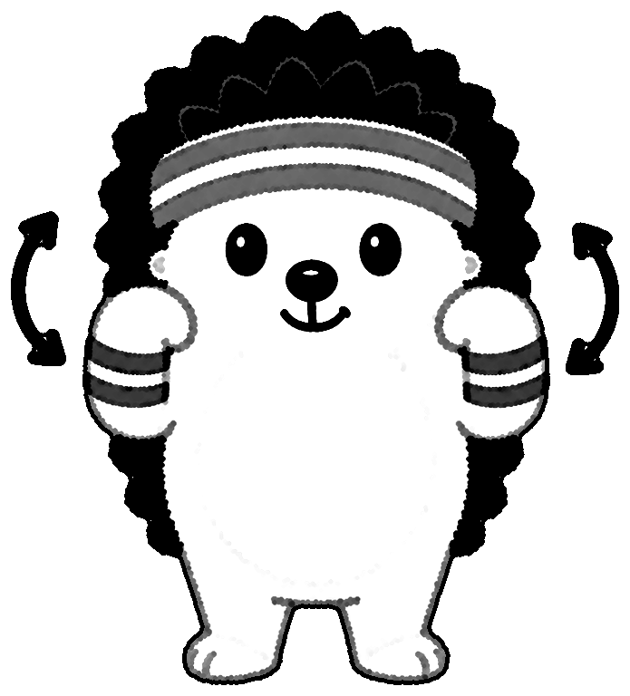
Hände zu den Schultern, mit den Ellbogen große Kreise nach hinten.
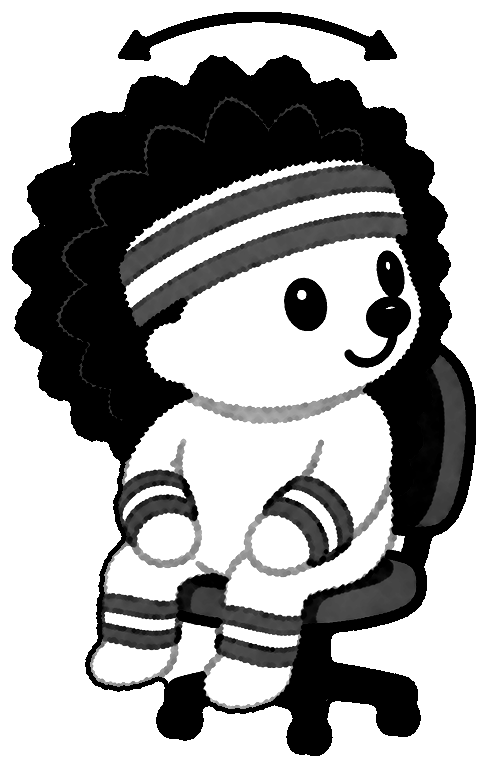
Kopf langsam nach links und rechts drehen, Schultern bleiben locker.
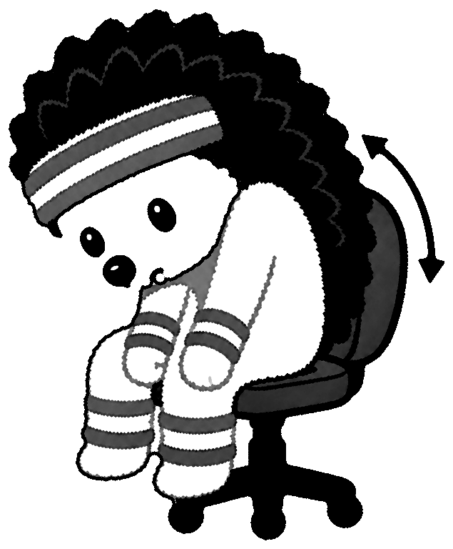
Im Sitzen: Rücken rund machen (Katze), dann Brust raus (Kuh).
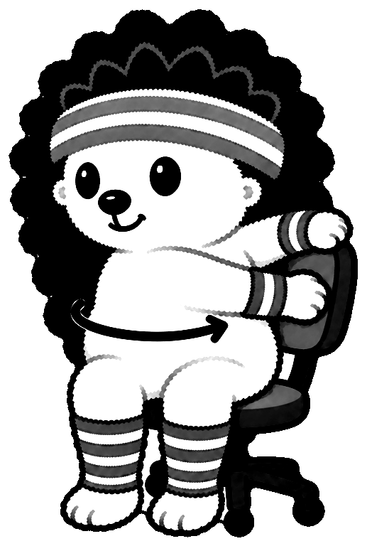
Füße fest am Boden, Oberkörper zur Lehne drehen, Seite wechseln.
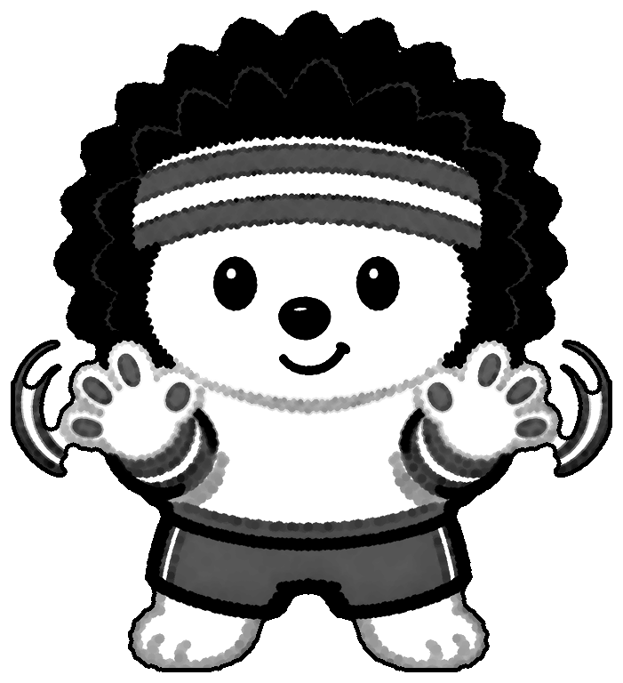
Finger weit spreizen, ausschütteln, dann die Handgelenke kreisen.
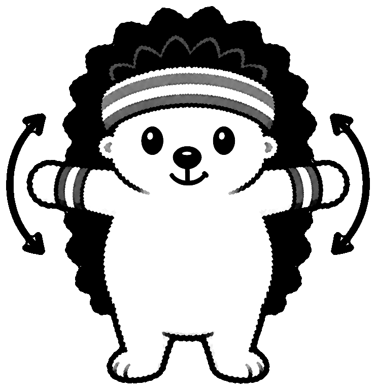
Arme seitlich gestreckt, große Kreise vorwärts, dann rückwärts.
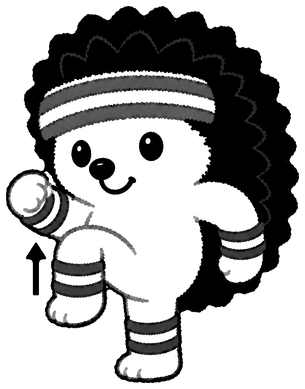
Auf der Stelle marschieren, Knie hoch, Arme schwingen mit.
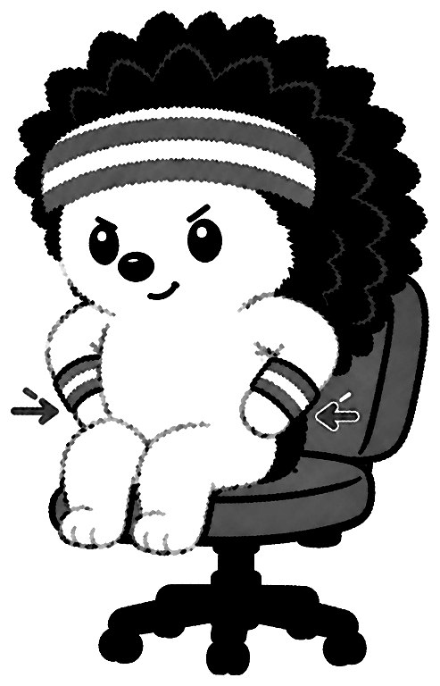
Im Sitzen den Po fest anspannen, kurz halten, wieder lösen.
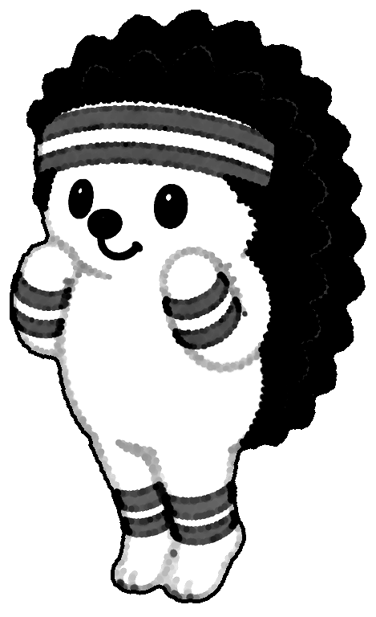
Ellbogen am Körper lassen, Fäuste zu den Schultern heben und senken.
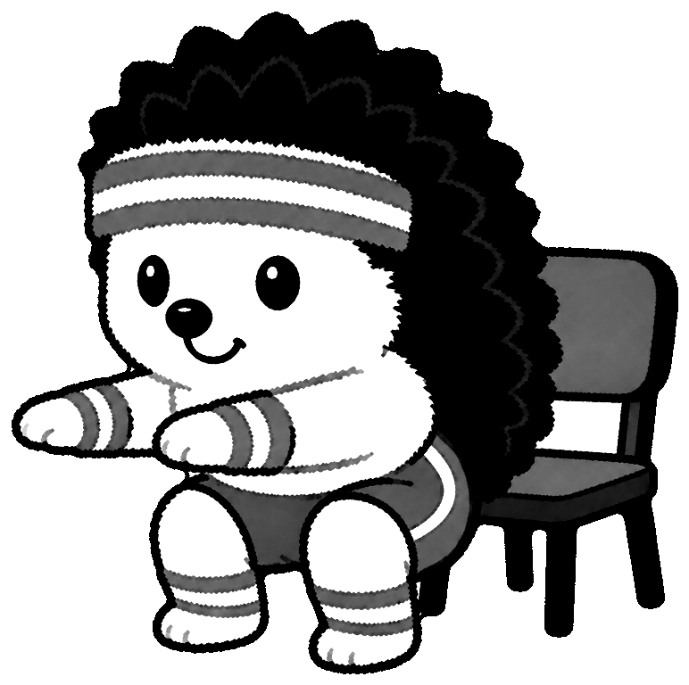
Po nach hinten, bis kurz über den Stuhl, Fersen bleiben am Boden.
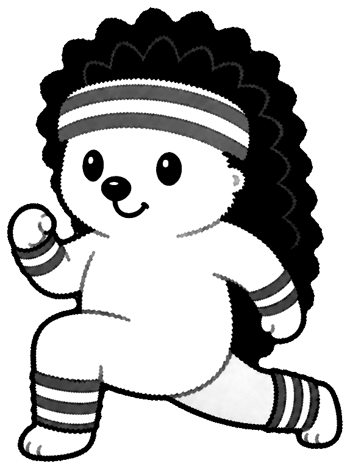
Großer Schritt nach vorn, Knie über dem Knöchel, Bein wechseln.
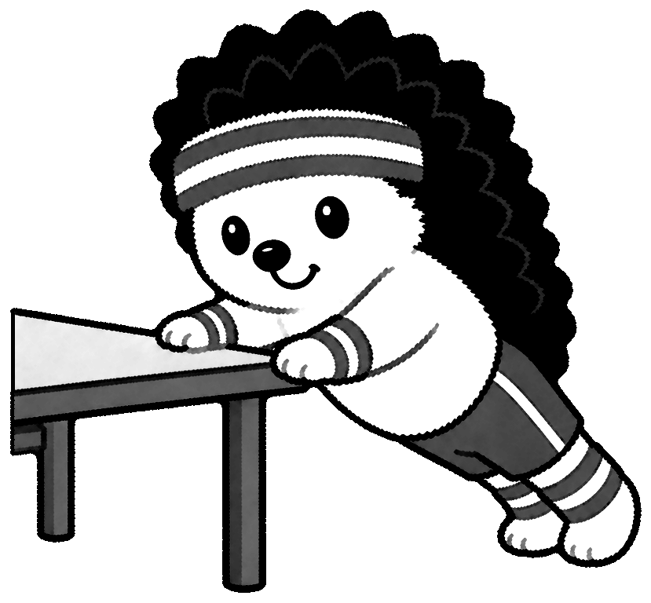
Hände an einen festen Tisch, Körper gerade, Brust zur Kante senken.
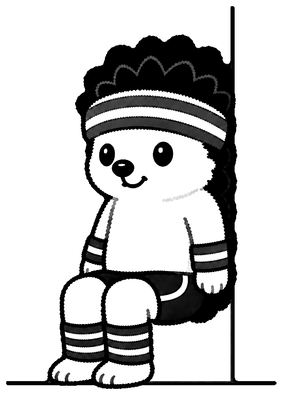
Rücken an die Wand, Oberschenkel waagerecht, Knie über den Knöcheln.
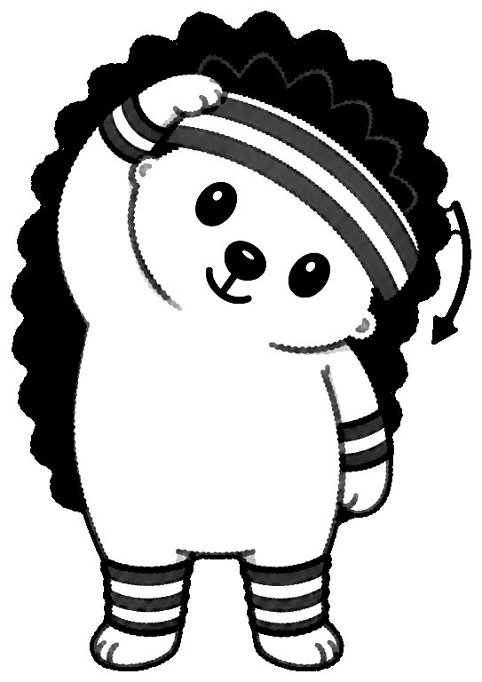
Ohr Richtung Schulter neigen, Hand nur auflegen, nicht ziehen.
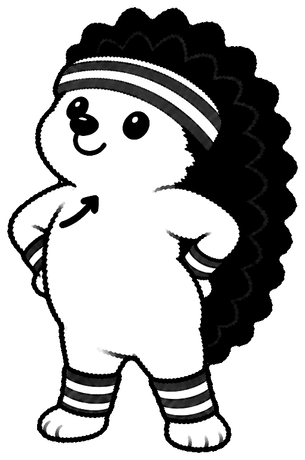
Hände in die Hüften, Ellbogen zurück, Brust raus, Kinn leicht hoch.
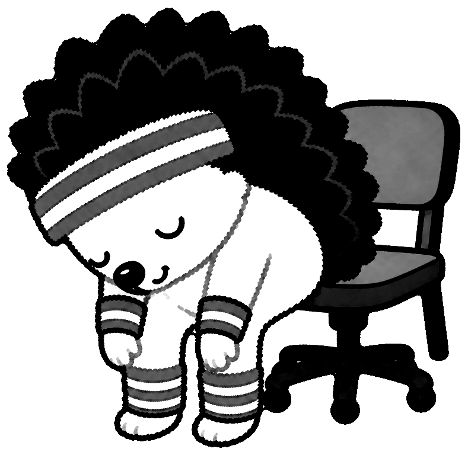
Auf der Stuhlkante den Oberkörper hängen lassen, langsam aufrollen.
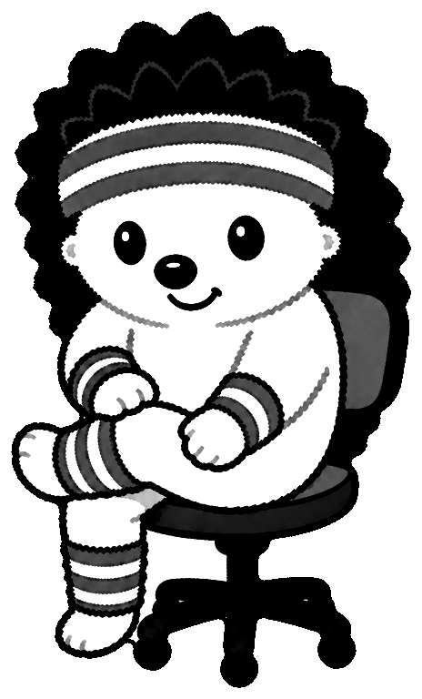
Im Sitzen einen Knöchel aufs andere Knie, Rücken gerade, vorlehnen.
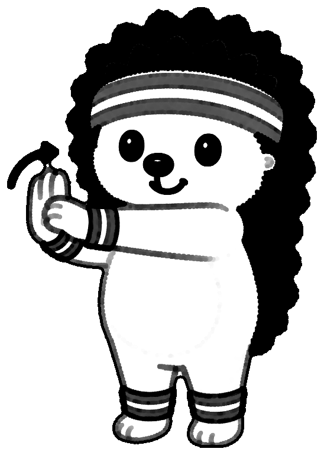
Arm vorstrecken, Finger mit der anderen Hand sanft zurückbiegen.
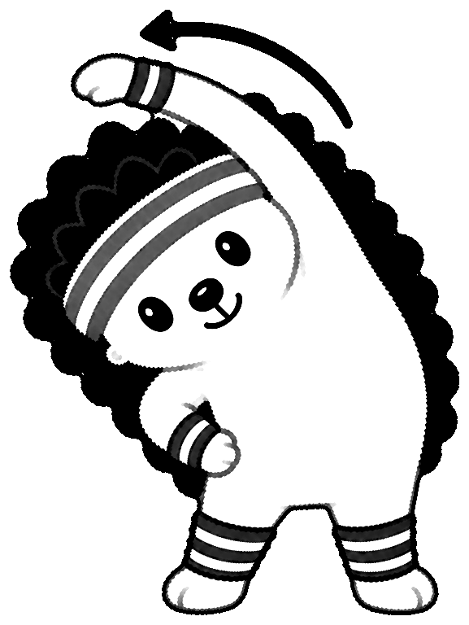
Einen Arm über den Kopf, Oberkörper zur Gegenseite neigen.
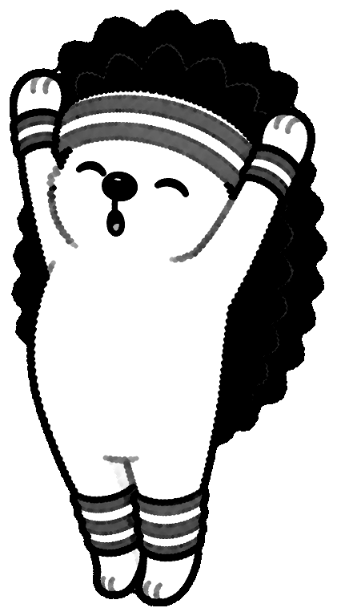
Auf die Zehenspitzen, beide Arme weit nach oben strecken.